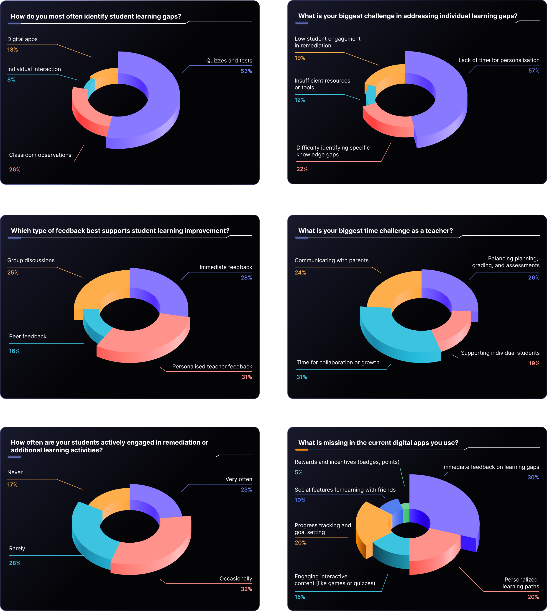

AcadAlly is a forward-thinking, AI tech organisation dedicated to transforming the education landscape by leveraging cutting-edge technology and data-driven analytics.
With its innovative AI engine, AcadAlly is committed to delivering personalised learning solutions that align with the National Education Policy and transcend geographical and board-related boundaries
The AcadAlly Teacher Application streamlines teaching by identifying student learning gaps, enabling personalized plans for effective remediation. It reduces assessment time, tracks progress, and provides insights for refining strategies and communication. With its intuitive design, AcadAlly enhances efficiency and outcomes in modern classrooms.
Teachers often struggle with identifying and addressing individual student learning gaps effectively, which results in missed opportunities for targeted interventions. Traditional methods of assessment and remediation are time-consuming, lack precision, and fail to provide actionable insights. This leads to inefficiencies in tailoring instruction, engaging students meaningfully, and tracking progress over time. These challenges are compounded by the increasing demand
for personalized learning and the administrative burden of managing large classrooms. As a result, teachers experience burnout, reduced effectiveness, and difficulty in ensuring equitable learning outcomes for all students. AcadAlly Teacher Application is designed to empower teachers by streamlining assessments, simplifying remediation, and providing actionable data, enabling them to focus on impactful teaching and improving student success.
Identify Individual Learning Gaps
Quickly understand each student's needs for focused teaching.
Provide Tailored Remediation
Develop personalised learning plans for a better understanding of concepts.
Save Time on Assessment Analysis
Speed up test reviews for improved teaching and support.
Monitor Student Progress Over Time
Track student progress to adjust teaching and communicate clearly.
Identify Individual Learning Gaps
- Time-consuming assessments
- Difficulty pinpointing specific areas.
- Reliance on broad assessments
Provide Tailored Remediation
- Significant effort to create differentiated materials.
- Challenges in engagement.
- Scaling personal attention.
Save Time on Assessment Analysis
- Time-consuming manual analysis.
- Lack of actionable insights.
- Difficulty identifying performance trends.
Monitor Student Progress Over Time
- Continuous, meticulous record-keeping required
- Ineffective progress capture and communication
- Challenges using data for instruction
To design the AcadAlly Teacher Application, I started by engaging with teachers to gain insights into their behaviors, needs, and challenges. By identifying the key difficulties they face in delivering personalized instruction, managing time, and tracking student progress, I gathered actionable feedback that guided the app's design and development.
User Interview
I used both Qualitative and Quantitative methods to gain a comprehensive understanding of the challenges teachers face while teaching. I conducted in-depth interviews and gathered survey responses from around 100-120 teachers to uncover specific issues they encounter throughout their teaching journey. These interviews and surveys provided valuable insights into teachers' experiences, frustrations, pain points, and needs, directly informing key design decisions. This approach allowed me to closely align the app’s features with teachers’ requirements, improving their overall experience and ensuring the app effectively supports their teaching goals.
Quantitative Research
Qualitative Research

To understand the user experience and identify areas for improvement, I conducted a feedback survey targeting students who actively used the app. The survey aimed to gather insights on the following:
- Overall Experience : How students liked the app and its features.
- Pain Points : Issues or challenges students faced while using the app.
- Improvements : Specific suggestions or areas they would like to see fixed.
- Recommendations : Ideas from students for enhancing the app’s functionality or engagement.


AcadAlly is being used in 15+ schools, catering to a diverse student base of approximately 14,500 students and 300 teachers. These schools leverage AcadAlly to:
- Identify and address learning gaps through personalized assessments.
- Enhance student engagement with interactive quizzes, videos, and gamified rewards.
- Provide teachers with actionable insights into student performance.